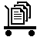

en
/ja
Davsktopについて
使用許可
Davsktopは
the Apache License, Version 2.0
のもとで使用許可されます。
リポジトリ
最新版を
github
から得ることができます。
アイコン
デスクトップ上
ルートフォルダ
ダブルクリックして開いてください。
新規フォルダ
新規フォルダを置きたいフォルダにドラッグ＆ドロップしてください。
新規テキストファイル
新規テキストファイルを置きたいフォルダにドラッグ＆ドロップしてください。
ゴミ箱
不必要なファイルをドラッグ＆ドロップしてください。
On Window
クリックするとリロードします。
クリックするとウインドウを閉じます。
クリックすると変更をアップロードします。
フォルダです。ダブルクリックすると開きます。
テキストファイルです。ダブルクリックすると開きます。
不明なファイルです。
ファイルへのリンクです。
上手な使い方
ファイルを同じフォルダにドラッグ＆ドロップすることで名前を変更できます。移動先に既に同じ名前のファイルがあればDavsktopは新しい名前を要求します。
リンクアイコン()は単なるハイパーリンクです。ファイルのダウンロードなど、ブラウザで通常できることは一通りできます。
設定
config.jsに以下の変数を書くことでDavsktopを設定することができます。
変数名
用途
デフォルト値
BACKGROUND_IMAGE
背景
undefined
MONTHS
月の名前
["Jan", "Feb", "Mar", "Apr", "May", "Jun", "Jul", "Aug", "Sep", "Oct", "Nov", "Dec"]
TEXT_MIME_PATTERN
MIME-Typeでテキストファイルを認識するパターン
/^text\//
TEXT_PATH_PATTERN
パスでテキストファイルを認識するパターン
/\.txt$/
既知の問題
ChromeとIE10上ではコピーできません。常に移動になります。